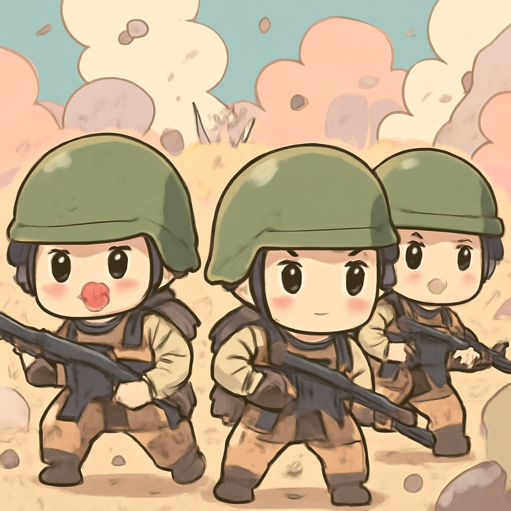

其一 · 南非約翰尼斯堡 · 兩起大規模槍擊事件造成27人死亡
南非約翰尼斯堡發生兩起槍擊事件，造成27人喪生。
南非約翰尼斯堡在過去一夜發生兩起槍擊事件，造成27人死亡，受害者多為夜店顧客。這一事件再次突顯了南非的暴力問題，特別是與幫派有關的犯罪行為。隨著槍擊事件的頻發，當地居民恐怕要多加小心，夜生活可能需要改成白天活動了。
🔗 原始新聞 ↗
2026-09-28 · 以古觀今，以笑抗愁
南非約翰尼斯堡發生兩起槍擊事件，造成27人喪生。
南非約翰尼斯堡在過去一夜發生兩起槍擊事件，造成27人死亡，受害者多為夜店顧客。這一事件再次突顯了南非的暴力問題，特別是與幫派有關的犯罪行為。隨著槍擊事件的頻發，當地居民恐怕要多加小心，夜生活可能需要改成白天活動了。
🔗 原始新聞 ↗
英國廣播公司深入也門前線，報導胡塞武裝的衝突。

在也門薩那，英國廣播公司深入前線，跟隨政府軍與胡塞武裝的激烈戰鬥。這場衝突持續多年，對當地平民造成了極大影響，他們在戰火中苦苦掙扎。隨著國際社會的注意力逐漸轉移，這場戰爭的結局依然遙遙無期，真是讓人感慨萬千。
🔗 原始新聞 ↗
越南釋放數十名政治犯，以應對即將到來的選舉呼聲。
越南在近期釋放了數十名政治犯，這一舉動與即將到來的選舉有關。這些被釋放的異議人士曾因抗議政府政策而遭到長期監禁。這一事件引發了國際關注，許多人期待越南能在政治自由方面有所進展，畢竟，越南的選舉可不只是選舉，還是一次大秀！
🔗 原始新聞 ↗
加拿大總理卡尼接受媒體專訪，談及多項議題。
在加拿大渥太華，總理馬克·卡尼最近接受了媒體的專訪，討論了國內外的多項議題，包括經濟、氣候變化等。這場訪問引起了廣泛關注，因為卡尼的言論可能會影響加拿大未來的政策走向。希望他能像咖啡一樣，濃烈卻不苦澀。
🔗 原始新聞 ↗
俄羅斯外長在聯合國大會上重申對烏克蘭戰爭的支持。
在俄羅斯莫斯科，外長拉夫羅夫在聯合國大會上強調俄國將繼續支持對烏克蘭的軍事行動。他的言論引發了國際社會的廣泛譴責，但俄國似乎對外界的反應不以為然。這場戰爭已經持續多年，未來的走向仍然不明，大家都在期待一個結局，但可能要再等一等了。
🔗 原始新聞 ↗